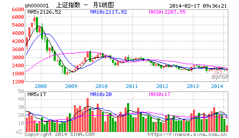

“教你炒股票”这样的题目，全中国不会有第二人比本ID更适合写的。当然，股票是炒出来的，不是写出来的，因此也从未想过写这样的题目。但任何事情都是有缘起的，缘分到了，也不妨写上一写。
人，总是很奇怪的，就算是很聪明的人，或者在其他行业很成功的人，一旦进入资本市场，就像换了人。虚拟和现实的鸿沟使得干实业的，且不说期货了，就算到风险小多的股市，也很少能干好的。而习惯在虚拟市场玩游戏的，基本很难回头去弄实业，这些例子都太多了。
周围朋友和经济有关的，干金融的比较多，也有几个干实业的。去年人民币放开后，有次和他们一起玩，偶然聊起股票。当时给他们的意见是，由于资源的全球化升势及人民币的升值，国内实业将有很大的困难，而虚拟市场由于对资本的吸纳作用将大有改观，会出现一个至少是大X浪级别的行情，劝他们应该分流部分资金到资本市场来。由于前几年资本市场上出事的人一拨接一拨，这帮家伙很犹豫，一晃就把时间过了。
今年，过完春节，这帮家伙突然开始不断骚扰本ID，说要入市。本ID当时已经忙得无暇分身，对他们一番数落，然后告诉他们，现在是个人都能挣钱，自己玩去，没空理你们。
进入三、四月份，当时有色等行情已经很火暴，这帮家伙想大进又怕风险，一直在小打小闹。有一天，又在一起玩，他们一定要本ID选择一些具体的股票。因为这两年一直有很多外资大基金进来接触要收中国快速消费品的企业，还有就是一些大的周期行业将面临重组，就让他们去关注这两类股票和权证。
五月份后，股市大涨，大家都很忙，中旬时又有机会碰头，一问之下，基本都没怎么大买，买了的也没几个站就下车了。他们都显得很烦躁，不断问有什么可买的。既有点可怜又有点烦他们，怎么在市场外弄得好好的，一到市场里都成这样了？就有点敷衍地告诉他们，去买深沪两地3元上下的本地股，而且告诉他们，这样下去肯定要出问题的，最好自己好好学学，别人怎么厉害也不可能整天像照顾小孩一样看着。
上周日，又碰在一起。这几位，大概都一肚子股票了，这次个个神采飞扬；大概又都刨了几本书，听了几股评，看了几杂志，更是口水喷喷地这面那面、一线二线地专家了，1800、2000、2500点地牛人了。这市场，还真能改造人！只是这市场的绞肉机，又有新货了。
有人说，市场是老人挣新人的钱，而市场中的老人，套个10年8年的一抓一大把。其实，市场从来都是明白人挣糊涂人的钱。在市场经济中，只要你参与到经济中来，就是经济人了，经济人当然就以挣钱为目的，特别在资本市场中，没有慈善家，只有赢家和输家。而不会赢钱的经济人，只是废人！无论你在其他方面如何成功，到了市场里，赢输就是唯一标准，除此之外，都是废话。
（待续）